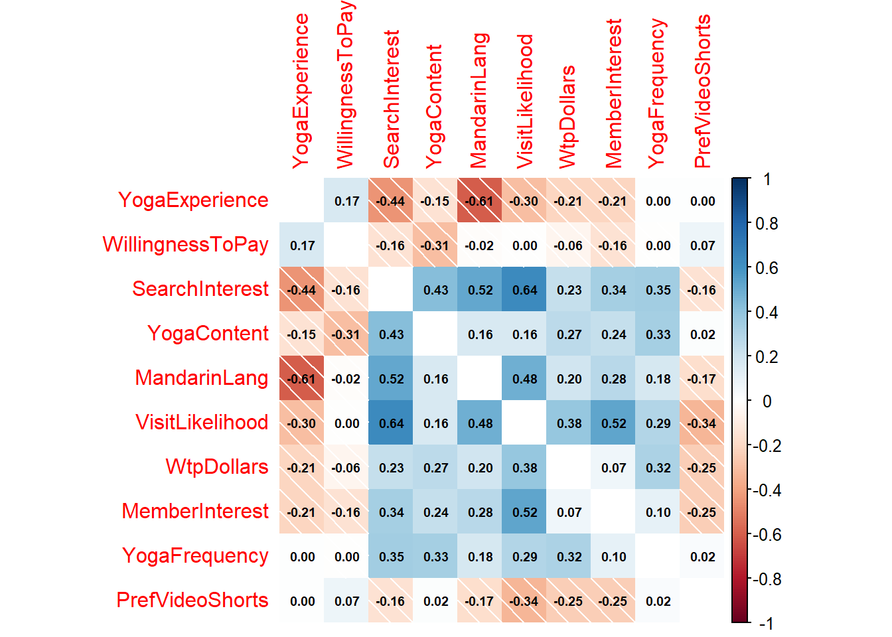
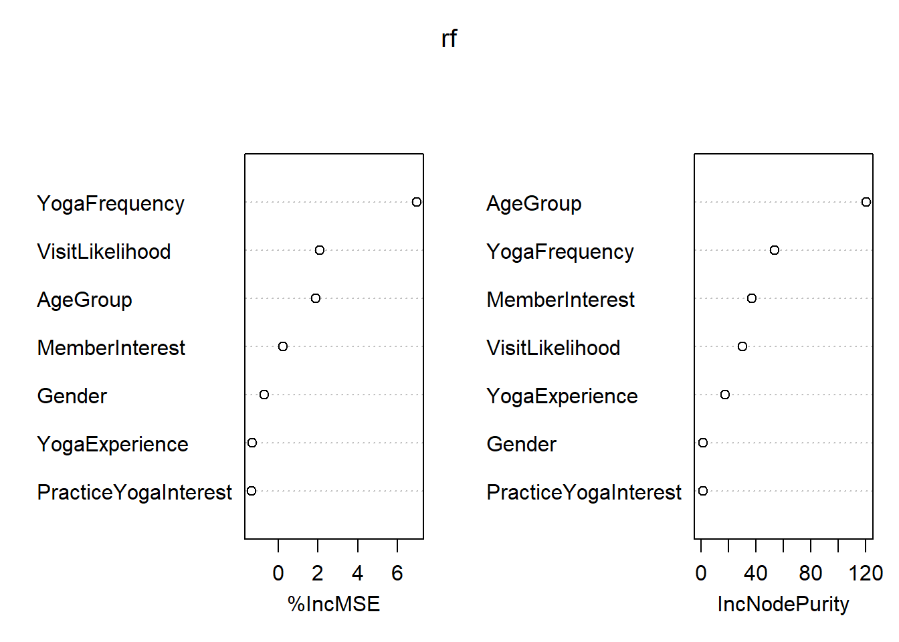
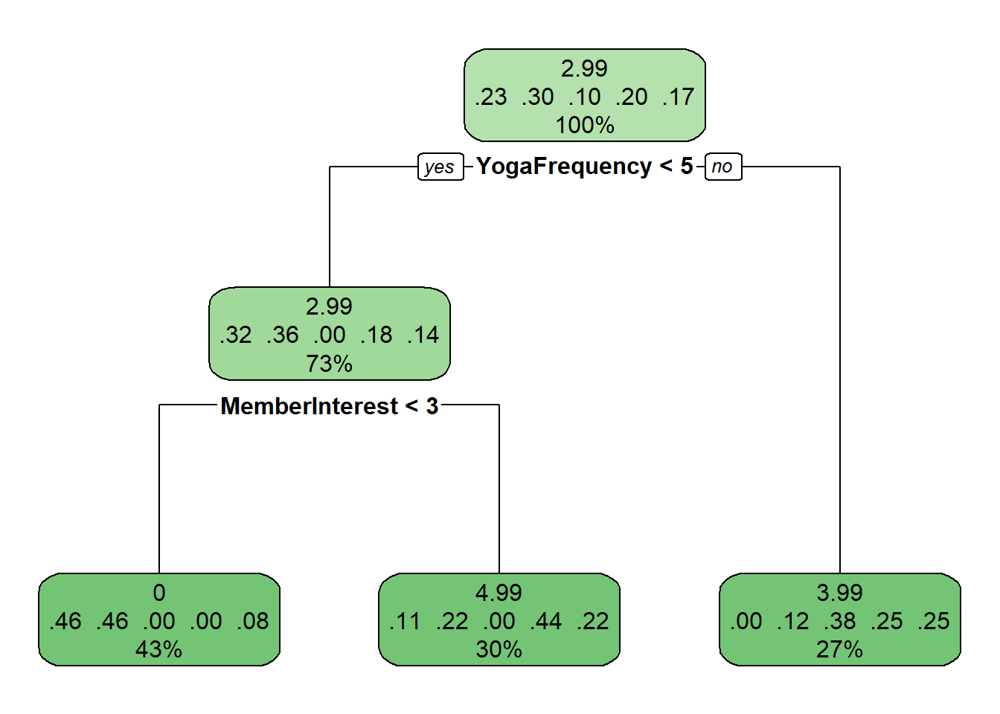
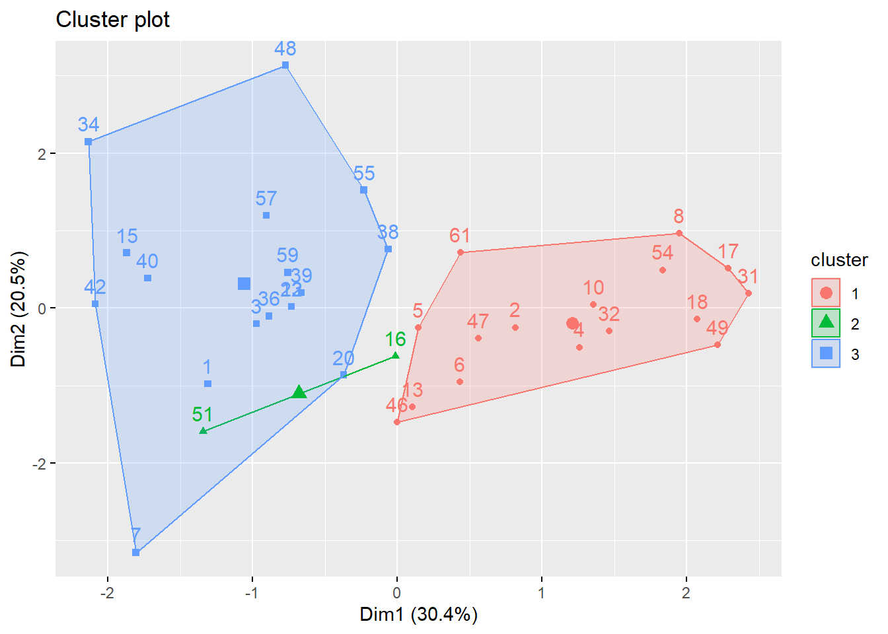
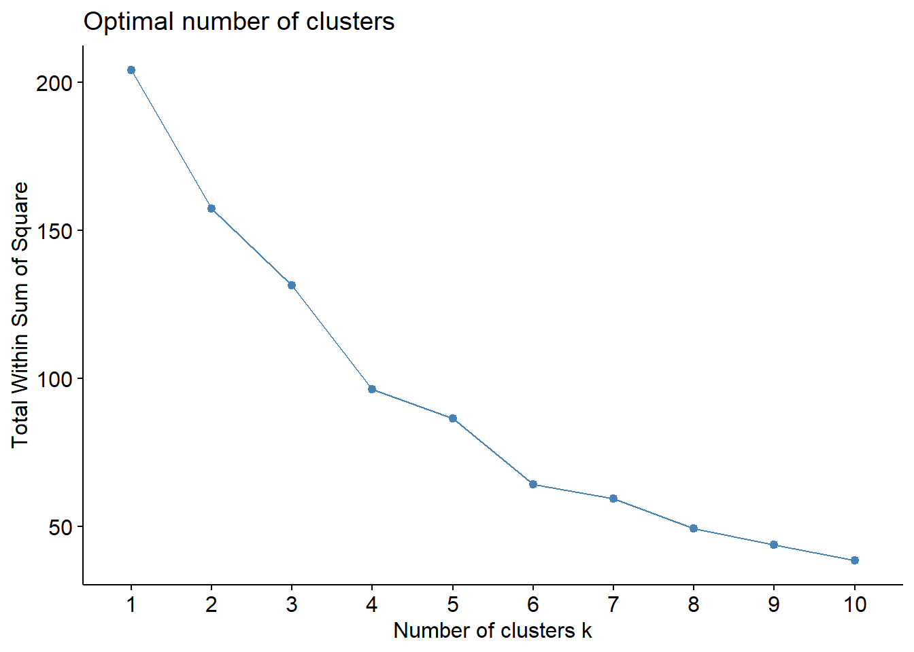
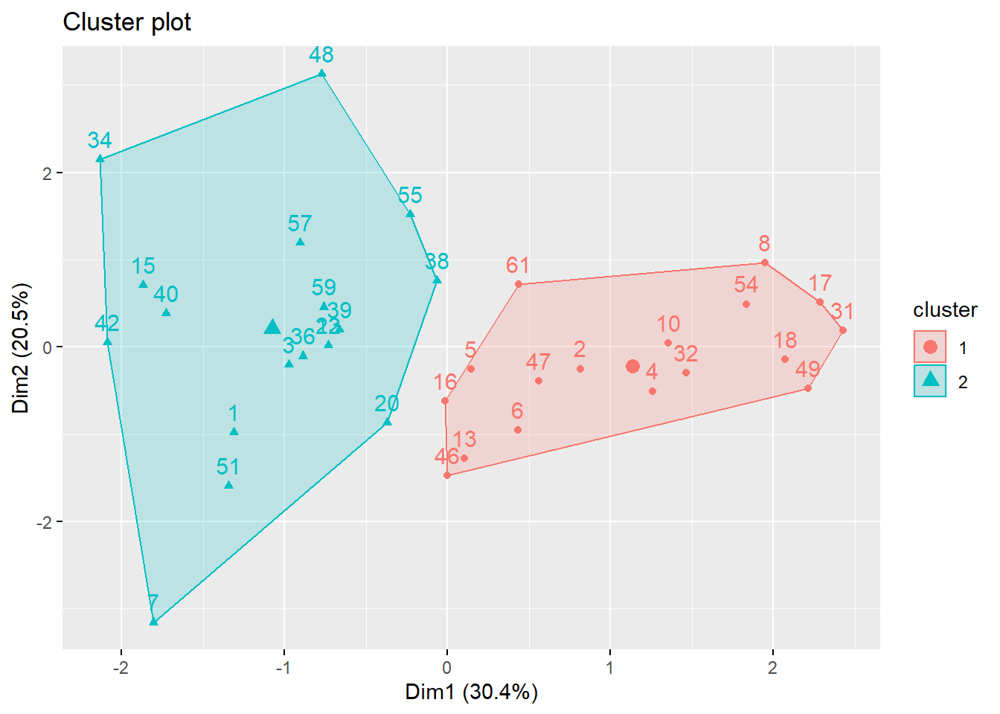

library(haven)
library(tidyverse)
library(dplyr)
library(janitor)
library(lubridate)Predictive Analysis
Library Loading
Read CSV
msdm_data <- read.csv("msdm_cleandata.csv")
head(msdm_data,3) IPAddress RecordedDate Question_1 Question_2 Question_3_1
1 146.75.253.248 2/10/2026 10:19:19 1 3 1
2 96.37.220.196 2/10/2026 10:26:36 1 3 1
3 24.64.125.120 2/10/2026 10:27:24 1 3 1
Question_3_2 Question_3_3 Question_3_4 Question_3_5 Question_3_6 Question_3_7
1 1 0 1 1 1 0
2 1 1 1 1 1 1
3 0 1 0 1 1 0
Question_3_8 Question_3_8_TEXT Question_4 Question_5_1 Question_5_2
1 0 5 5 5
2 0 4 2 5
3 0 4 4 4
Question_5_3 Question_6_1 Question_6_2 Question_6_3 Question_6_4 Question_7_1
1 5 0 0 0 1 4
2 4 0 0 1 0 4
3 4 0 0 0 1 3
Question_7_2 Question_7_3 Question_7_4 Question_7_5 Question_7_6 Question_7_7
1 4 4 4 4 5 4
2 4 5 4 4 3 2
3 4 4 4 5 5 3
Question_8 Question_9 Question_9_5_TEXT Question_10 Question_11_1
1 29 4 NA 4 1
2 27 5 0 4 1
3 29 3 NA 4 1
Question_11_2 Question_11_3 Question_11_4 Question_11_5 Question_12
1 1 0 0 0 3
2 1 0 0 0 3
3 0 0 0 0 4
Question_13 Question_14 Question_15_1 Question_15_2 Question_15_3
1 1 6 1 0 0
2 1 4 1 0 0
3 0 3 1 0 0
Question_15_4 Question_15_5 Question_15_5_TEXT Question_16 Question_17
1 1 0 NA 187 3
2 0 0 NA 187 3
3 0 0 NA 31 4
filter_. PrimaryLast Miss Missi WTP_DOLLARS
1 1 1 0 0 5.99
2 1 1 0 0 NA
3 1 1 0 0 4.99#view(msdm_data)
#str(msdm_data)Clean Data Part 1
#Clean Variable Names
SurveyData <- clean_names(msdm_data) |> #clean SurveyData names
clean_names(case= "upper_camel") #clean up using upper_camel
#head(SurveyData) #check to see changes made to SurveyData
#change startdate to Date
SurveyData$RecordedDate <- as.Date(SurveyData$RecordedDate,
format = "%m/%d/%Y %H:%M:%S")
str(SurveyData$RecordedDate) Date[1:61], format: "2026-02-10" "2026-02-10" "2026-02-10" "2026-02-11" "2026-02-11" ...#head(SurveyData)Clean Survey Variables
#change variable names
CleanSurveyData <- SurveyData |>
rename(
PracticeYogaInterest = Question1,
YogaExperience = Question2,
YogaActivityGroup= Question3_1,
YogaActivityPrivate= Question3_2,
YogaActivityOnline= Question3_3,
YogaActivityPreRec= Question3_4,
YogaActivityBook= Question3_5,
YogaActivityFriend= Question3_6,
YogaActivitySelfTaught= Question3_7,
YogaActivityOther= Question3_8,
YogaActivitiesOtherText = Question3_8Text,
YogaFrequency = Question4,
YogaContent = Question5_1,
YogaLifestyle = Question5_2,
YogaInfoSeeking = Question5_3,
PrefVideoShorts = Question6_1,
PrefVideoShortVideo = Question6_2,
PrefVideoMedium = Question6_3,
PrefVideoFulllength = Question6_4,
BegFlowInterest = Question7_1,
StressReliefInterest = Question7_2,
TradChineseInterest = Question7_3,
BreathworkInterest = Question7_4,
FullLengthInterest = Question7_5,
MonthProgramInterest = Question7_6,
ShortDailyInterest = Question7_7,
MemberInterest = Question8,
WillingnessToPay = Question9,
WillingnessToPayText = Question9_5Text,
VisitLikelihood = Question10,
YoutubeSocial = Question11_1,
InstagramSocial = Question11_2,
TIkTokSocial = Question11_3,
FacebookSocial= Question11_4,
PinterestSocial = Question11_5,
AgeGroup = Question12,
Gender = Question13,
IncomeBracket = Question14,
EnglishLang = Question15_1,
MandarinLang = Question15_2,
CantoneseLang = Question15_3,
SpanishLang= Question15_4,
OtherLang = Question15_5,
OtherLangeText = Question15_5Text,
Country = Question16,
SearchInterest = Question17
)
head(CleanSurveyData,3) IpAddress RecordedDate PracticeYogaInterest YogaExperience
1 146.75.253.248 2026-02-10 1 3
2 96.37.220.196 2026-02-10 1 3
3 24.64.125.120 2026-02-10 1 3
YogaActivityGroup YogaActivityPrivate YogaActivityOnline YogaActivityPreRec
1 1 1 0 1
2 1 1 1 1
3 1 0 1 0
YogaActivityBook YogaActivityFriend YogaActivitySelfTaught YogaActivityOther
1 1 1 0 0
2 1 1 1 0
3 1 1 0 0
YogaActivitiesOtherText YogaFrequency YogaContent YogaLifestyle
1 5 5 5
2 4 2 5
3 4 4 4
YogaInfoSeeking PrefVideoShorts PrefVideoShortVideo PrefVideoMedium
1 5 0 0 0
2 4 0 0 1
3 4 0 0 0
PrefVideoFulllength BegFlowInterest StressReliefInterest TradChineseInterest
1 1 4 4 4
2 0 4 4 5
3 1 3 4 4
BreathworkInterest FullLengthInterest MonthProgramInterest ShortDailyInterest
1 4 4 5 4
2 4 4 3 2
3 4 5 5 3
MemberInterest WillingnessToPay WillingnessToPayText VisitLikelihood
1 29 4 NA 4
2 27 5 0 4
3 29 3 NA 4
YoutubeSocial InstagramSocial TIkTokSocial FacebookSocial PinterestSocial
1 1 1 0 0 0
2 1 1 0 0 0
3 1 0 0 0 0
AgeGroup Gender IncomeBracket EnglishLang MandarinLang CantoneseLang
1 3 1 6 1 0 0
2 3 1 4 1 0 0
3 4 0 3 1 0 0
SpanishLang OtherLang OtherLangeText Country SearchInterest Filter
1 1 0 NA 187 3 1
2 0 0 NA 187 3 1
3 0 0 NA 31 4 1
PrimaryLast Miss Missi WtpDollars
1 1 0 0 5.99
2 1 0 0 NA
3 1 0 0 4.99Clean Data Part 2
#Clean Data
#recode any values not recoded on SPSS and Qualtrics
CleanSurveyData$MemberInterest <-
recode(
CleanSurveyData$MemberInterest,
`27` = 1,
`28` = 2,
`29` = 3
)
#Clean country to categorical
CleanSurveyData$Country <-
factor(
CleanSurveyData$Country,
levels = c(31,185,187),
labels = c("China","Taiwan","United States")
)
#clean gender
CleanSurveyData$Gender <- as.factor(CleanSurveyData$Gender)
#join text and regular wtp
CleanSurveyDataJoin<- CleanSurveyData |>
mutate(
WillingnessToPayText= as.numeric(WillingnessToPayText),
WtpDollars= coalesce(WtpDollars, WillingnessToPayText)
)
head(CleanSurveyDataJoin$WtpDollars,10) [1] 5.99 0.00 4.99 2.99 3.99 3.99 20.00 0.00 NA 3.99Full Messy Correlation Matrix
library(corrplot)
#PairWise Correlation of Continuous Variables
#new Data Set to keep everything numeric
str(CleanSurveyData)'data.frame': 61 obs. of 53 variables:
$ IpAddress : chr "146.75.253.248" "96.37.220.196" "24.64.125.120" "104.55.12.239" ...
$ RecordedDate : Date, format: "2026-02-10" "2026-02-10" ...
$ PracticeYogaInterest : int 1 1 1 1 1 1 1 1 1 1 ...
$ YogaExperience : int 3 3 3 3 1 2 3 3 3 3 ...
$ YogaActivityGroup : int 1 1 1 1 1 1 1 1 1 1 ...
$ YogaActivityPrivate : int 1 1 0 0 0 0 0 0 0 0 ...
$ YogaActivityOnline : int 0 1 1 0 0 1 0 1 0 0 ...
$ YogaActivityPreRec : int 1 1 0 1 1 1 1 1 1 1 ...
$ YogaActivityBook : int 1 1 1 1 0 1 0 1 0 0 ...
$ YogaActivityFriend : int 1 1 1 1 0 0 0 1 1 0 ...
$ YogaActivitySelfTaught : int 0 1 0 0 0 0 1 0 1 0 ...
$ YogaActivityOther : int 0 0 0 0 0 0 0 1 0 0 ...
$ YogaActivitiesOtherText: chr " " " " " " " " ...
$ YogaFrequency : int 5 4 4 4 5 5 5 2 3 3 ...
$ YogaContent : int 5 2 4 5 5 5 4 4 4 3 ...
$ YogaLifestyle : int 5 5 4 5 3 5 5 4 4 2 ...
$ YogaInfoSeeking : int 5 4 4 4 4 5 3 3 4 2 ...
$ PrefVideoShorts : int 0 0 0 1 0 0 0 0 0 0 ...
$ PrefVideoShortVideo : int 0 0 0 1 1 1 1 1 0 1 ...
$ PrefVideoMedium : int 0 1 0 1 0 1 1 1 1 0 ...
$ PrefVideoFulllength : int 1 0 1 1 0 1 1 0 1 0 ...
$ BegFlowInterest : int 4 4 3 3 3 3 2 4 4 4 ...
$ StressReliefInterest : int 4 4 4 3 3 4 4 4 4 4 ...
$ TradChineseInterest : int 4 5 4 4 4 4 5 4 4 4 ...
$ BreathworkInterest : int 4 4 4 5 4 4 4 5 4 2 ...
$ FullLengthInterest : int 4 4 5 4 1 5 5 4 3 4 ...
$ MonthProgramInterest : int 5 3 5 3 3 2 2 2 3 4 ...
$ ShortDailyInterest : int 4 2 3 4 3 2 2 1 2 2 ...
$ MemberInterest : num 3 1 3 2 2 1 1 1 2 2 ...
$ WillingnessToPay : int 4 5 3 1 2 2 5 5 NA 2 ...
$ WillingnessToPayText : int NA 0 NA NA NA NA 20 0 NA NA ...
$ VisitLikelihood : int 4 4 4 2 2 3 4 3 4 2 ...
$ YoutubeSocial : int 1 1 1 1 1 1 1 NA 1 1 ...
$ InstagramSocial : int 1 1 0 0 0 0 1 NA 0 1 ...
$ TIkTokSocial : int 0 0 0 0 0 0 0 NA 0 0 ...
$ FacebookSocial : int 0 0 0 1 1 0 0 NA 0 0 ...
$ PinterestSocial : int 0 0 0 0 0 0 0 NA 0 0 ...
$ AgeGroup : int 3 3 4 4 4 4 2 4 3 3 ...
$ Gender : Factor w/ 2 levels "0","1": 2 2 1 2 2 2 2 2 2 2 ...
$ IncomeBracket : int 6 4 3 2 6 5 4 6 6 4 ...
$ EnglishLang : int 1 1 1 1 1 1 1 1 1 1 ...
$ MandarinLang : int 0 0 0 0 0 0 0 0 0 0 ...
$ CantoneseLang : int 0 0 0 0 0 0 0 0 0 0 ...
$ SpanishLang : int 1 0 0 0 0 0 0 0 0 0 ...
$ OtherLang : int 0 0 0 0 0 0 0 0 0 0 ...
$ OtherLangeText : logi NA NA NA NA NA NA ...
$ Country : Factor w/ 3 levels "China","Taiwan",..: 3 3 1 3 3 2 NA 3 3 NA ...
$ SearchInterest : int 3 3 4 2 4 4 2 3 3 2 ...
$ Filter : int 1 1 1 1 1 1 1 1 1 1 ...
$ PrimaryLast : int 1 1 1 1 1 1 1 1 1 1 ...
$ Miss : int 0 0 0 0 0 0 0 0 0 0 ...
$ Missi : int 0 0 0 0 0 0 0 5 1 0 ...
$ WtpDollars : num 5.99 NA 4.99 2.99 3.99 3.99 NA NA NA 3.99 ...DataForCorAnalysisAll = CleanSurveyDataJoin |>
select(where(is.numeric))
CorMatrixAll = cor(DataForCorAnalysisAll, use= "pairwise.complete.obs")
corrplot(CorMatrixAll, method = 'shade', addCoef.col = 'black', type = 'full', number.cex = 0.6, order = 'original', diag= FALSE)
Correlation Matrix Cleaned
#Narrow Down Correlation Matrix
DataForCorAnalysis = CleanSurveyDataJoin |>
select(YogaExperience, WillingnessToPay,SearchInterest,YogaContent,MandarinLang, VisitLikelihood, WtpDollars,MemberInterest, YogaFrequency, PrefVideoShorts)
CorMatrix = cor(DataForCorAnalysis, use= "pairwise.complete.obs")
corrplot(CorMatrix, method = 'shade', addCoef.col = 'black', type = 'full', number.cex = 0.6, order = 'original', diag= FALSE)
#membership interest of people who answered all 4 survey questions
#model_data <- CleanSurveyData|> #new data to use for predicitive analysis
# select(MembershipInterest,AgeGroup,Gender, YogaExperience) |> #filtering 4 survey #questions
#str(model_data) #shows 50 obs of 4 variablesLinear Regressions
#Linear Regression 1
#| message: false
#| warning: false
#Linear Regresssion
set.seed(123)
#library(tidymodels)
library(rio)Warning: package 'rio' was built under R version 4.5.3ModelSurvey= lm(WtpDollars ~ YogaFrequency, CleanSurveyDataJoin)
summary(ModelSurvey)
Call:
lm(formula = WtpDollars ~ YogaFrequency, data = CleanSurveyDataJoin)
Residuals:
Min 1Q Median 3Q Max
-4.7214 -1.7314 -0.7314 1.2686 15.2786
Coefficients:
Estimate Std. Error t value Pr(>|t|)
(Intercept) 0.3130 1.5587 0.201 0.8417
YogaFrequency 0.8817 0.3939 2.238 0.0302 *
---
Signif. codes: 0 '***' 0.001 '**' 0.01 '*' 0.05 '.' 0.1 ' ' 1
Residual standard error: 3.098 on 45 degrees of freedom
(14 observations deleted due to missingness)
Multiple R-squared: 0.1002, Adjusted R-squared: 0.08019
F-statistic: 5.01 on 1 and 45 DF, p-value: 0.03019#shows r-squared 0.
#adjusted r-squared 0.125
#significant overall 0.0479<5%
#membershipinterest = 0.018
#if age stays the same but membeship interest increases the willingess to pay increases by 0.48cents
#people who are intersted in the membership will be wiling to pay more
#focus on membeship content#Linear Regresssion 2
#| message: false
#| warning: false
set.seed(123)
ModelSurvey2= lm(WtpDollars ~ VisitLikelihood, CleanSurveyDataJoin)
summary(ModelSurvey2)
Call:
lm(formula = WtpDollars ~ VisitLikelihood, data = CleanSurveyDataJoin)
Residuals:
Min 1Q Median 3Q Max
-4.3341 -1.4376 0.4689 1.0301 15.6659
Coefficients:
Estimate Std. Error t value Pr(>|t|)
(Intercept) -0.4142 1.5350 -0.270 0.78850
VisitLikelihood 1.1871 0.4292 2.765 0.00821 **
---
Signif. codes: 0 '***' 0.001 '**' 0.01 '*' 0.05 '.' 0.1 ' ' 1
Residual standard error: 3.02 on 45 degrees of freedom
(14 observations deleted due to missingness)
Multiple R-squared: 0.1453, Adjusted R-squared: 0.1263
F-statistic: 7.648 on 1 and 45 DF, p-value: 0.008214#Linear Regresssion 3
#| message: false
#| warning: false
set.seed(123)
ModelSurvey3= lm(WtpDollars ~ VisitLikelihood+YogaFrequency, CleanSurveyDataJoin)
summary(ModelSurvey3)
Call:
lm(formula = WtpDollars ~ VisitLikelihood + YogaFrequency, data = CleanSurveyDataJoin)
Residuals:
Min 1Q Median 3Q Max
-4.952 -1.783 0.064 1.123 15.048
Coefficients:
Estimate Std. Error t value Pr(>|t|)
(Intercept) -1.9957 1.8312 -1.090 0.282
VisitLikelihood 0.9744 0.4452 2.189 0.034 *
YogaFrequency 0.6099 0.3981 1.532 0.133
---
Signif. codes: 0 '***' 0.001 '**' 0.01 '*' 0.05 '.' 0.1 ' ' 1
Residual standard error: 2.976 on 44 degrees of freedom
(14 observations deleted due to missingness)
Multiple R-squared: 0.1885, Adjusted R-squared: 0.1517
F-statistic: 5.112 on 2 and 44 DF, p-value: 0.01009#Linear Regresssion 4
#| message: false
#| warning: false
set.seed(123)
ModelSurvey4= lm(WtpDollars ~ AgeGroup+Gender+YogaFrequency+MandarinLang, CleanSurveyDataJoin)
summary(ModelSurvey4)
Call:
lm(formula = WtpDollars ~ AgeGroup + Gender + YogaFrequency +
MandarinLang, data = CleanSurveyDataJoin)
Residuals:
Min 1Q Median 3Q Max
-5.2644 -1.3039 0.3332 0.9990 12.8827
Coefficients:
Estimate Std. Error t value Pr(>|t|)
(Intercept) 6.8533 3.4966 1.960 0.0568 .
AgeGroup -1.8529 0.7520 -2.464 0.0180 *
Gender1 -1.2990 1.8763 -0.692 0.4926
YogaFrequency 1.0538 0.4004 2.632 0.0119 *
MandarinLang 1.7922 1.0136 1.768 0.0845 .
---
Signif. codes: 0 '***' 0.001 '**' 0.01 '*' 0.05 '.' 0.1 ' ' 1
Residual standard error: 2.99 on 41 degrees of freedom
(15 observations deleted due to missingness)
Multiple R-squared: 0.2356, Adjusted R-squared: 0.161
F-statistic: 3.159 on 4 and 41 DF, p-value: 0.02365#Linear Regresssion 5
#| message: false
#| warning: false
set.seed(123)
ModelSurvey5= lm(WtpDollars ~ AgeGroup+Gender+YogaFrequency+MandarinLang+Country, CleanSurveyDataJoin)
summary(ModelSurvey5)
Call:
lm(formula = WtpDollars ~ AgeGroup + Gender + YogaFrequency +
MandarinLang + Country, data = CleanSurveyDataJoin)
Residuals:
Min 1Q Median 3Q Max
-4.4649 -1.2701 0.2077 1.2739 3.1604
Coefficients:
Estimate Std. Error t value Pr(>|t|)
(Intercept) 2.6957 2.6517 1.017 0.31697
AgeGroup -0.4037 0.5916 -0.682 0.49986
Gender1 -1.4681 1.2767 -1.150 0.25870
YogaFrequency 0.5490 0.3475 1.580 0.12398
MandarinLang 2.0863 0.7615 2.740 0.00997 **
CountryTaiwan 2.6809 1.7140 1.564 0.12763
CountryUnited States 0.5700 1.2330 0.462 0.64699
---
Signif. codes: 0 '***' 0.001 '**' 0.01 '*' 0.05 '.' 0.1 ' ' 1
Residual standard error: 1.944 on 32 degrees of freedom
(22 observations deleted due to missingness)
Multiple R-squared: 0.329, Adjusted R-squared: 0.2032
F-statistic: 2.616 on 6 and 32 DF, p-value: 0.03541#Linear Regresssion 5
#| message: false
#| warning: false
set.seed(123)
ModelSurvey6= lm(WtpDollars ~ AgeGroup+Gender+YogaFrequency+MandarinLang+PracticeYogaInterest, CleanSurveyDataJoin)
summary(ModelSurvey6)
Call:
lm(formula = WtpDollars ~ AgeGroup + Gender + YogaFrequency +
MandarinLang + PracticeYogaInterest, data = CleanSurveyDataJoin)
Residuals:
Min 1Q Median 3Q Max
-5.4444 -1.3057 0.2226 1.1166 12.7088
Coefficients:
Estimate Std. Error t value Pr(>|t|)
(Intercept) 5.0789 4.2698 1.189 0.24126
AgeGroup -1.8467 0.7564 -2.442 0.01914 *
Gender1 -1.2114 1.8907 -0.641 0.52537
YogaFrequency 1.1524 0.4246 2.714 0.00976 **
MandarinLang 1.6992 1.0273 1.654 0.10594
PracticeYogaInterest 1.3550 1.8495 0.733 0.46805
---
Signif. codes: 0 '***' 0.001 '**' 0.01 '*' 0.05 '.' 0.1 ' ' 1
Residual standard error: 3.007 on 40 degrees of freedom
(15 observations deleted due to missingness)
Multiple R-squared: 0.2457, Adjusted R-squared: 0.1514
F-statistic: 2.606 on 5 and 40 DF, p-value: 0.03935#Linear Regresssion 5
#| message: false
#| warning: false
set.seed(123)
ModelSurvey6= lm(WtpDollars ~ AgeGroup+Gender+YogaFrequency+MandarinLang+PracticeYogaInterest+YoutubeSocial, CleanSurveyDataJoin)
summary(ModelSurvey6)
Call:
lm(formula = WtpDollars ~ AgeGroup + Gender + YogaFrequency +
MandarinLang + PracticeYogaInterest + YoutubeSocial, data = CleanSurveyDataJoin)
Residuals:
Min 1Q Median 3Q Max
-5.4685 -1.4381 0.5215 0.9636 12.2511
Coefficients:
Estimate Std. Error t value Pr(>|t|)
(Intercept) 6.8197 4.7645 1.431 0.1610
AgeGroup -2.2804 0.8568 -2.661 0.0116 *
Gender1 -1.4773 1.9671 -0.751 0.4575
YogaFrequency 1.0087 0.4590 2.198 0.0345 *
MandarinLang 2.0578 1.1060 1.861 0.0710 .
PracticeYogaInterest 1.0747 1.8870 0.570 0.5725
YoutubeSocial 0.8494 1.3858 0.613 0.5438
---
Signif. codes: 0 '***' 0.001 '**' 0.01 '*' 0.05 '.' 0.1 ' ' 1
Residual standard error: 3.048 on 36 degrees of freedom
(18 observations deleted due to missingness)
Multiple R-squared: 0.2569, Adjusted R-squared: 0.133
F-statistic: 2.074 on 6 and 36 DF, p-value: 0.08077Random Forest (Failed)
#Random Forest Predictor Failed because of Sample Size
#remove NA respondents
set.seed(123)
library(randomForest)Warning: package 'randomForest' was built under R version 4.5.3randomForest 4.7-1.2Type rfNews() to see new features/changes/bug fixes.
Attaching package: 'randomForest'The following object is masked from 'package:dplyr':
combineThe following object is masked from 'package:ggplot2':
marginmodel_data <- CleanSurveyDataJoin|> #new data to use for predicitive analysis
select(WtpDollars,YogaFrequency,AgeGroup,Gender, VisitLikelihood, YogaExperience,PracticeYogaInterest, MemberInterest) |> #select
na.omit()
rf <- randomForest(
WtpDollars ~ .,
data = model_data,
importance = TRUE
)
varImpPlot(rf)
print(rf)
Call:
randomForest(formula = WtpDollars ~ ., data = model_data, importance = TRUE)
Type of random forest: regression
Number of trees: 500
No. of variables tried at each split: 2
Mean of squared residuals: 12.31125
% Var explained: -3.94Decision Tree
library(rpart)
library(rpart.plot)
set.seed(123)
model_data2 <- CleanSurveyDataJoin|> #new data to use for predicitive analysis
select(WtpDollars,YogaFrequency,VisitLikelihood, YogaExperience,PracticeYogaInterest, MemberInterest, AgeGroup, Gender, Country) |>
na.omit()
dt <- rpart( #decison tree
WtpDollars ~ .,
data = model_data2,
method = "class")
rpart.plot(
dt,
type = 2,
extra = 104,
fallen.leaves = TRUE,
box.palette = "Greens"
)
summary(dt)Call:
rpart(formula = WtpDollars ~ ., data = model_data2, method = "class")
n= 30
CP nsplit rel error xerror xstd
1 0.0952381 0 1.0000000 1.285714 0.07824608
2 0.0100000 2 0.8095238 1.333333 0.06506000
Variable importance
MemberInterest YogaFrequency VisitLikelihood YogaExperience Country
36 32 12 8 8
Gender
4
Node number 1: 30 observations, complexity param=0.0952381
predicted class=2.99 expected loss=0.7 P(node) =1
class counts: 7 9 3 6 5
probabilities: 0.233 0.300 0.100 0.200 0.167
left son=2 (22 obs) right son=3 (8 obs)
Primary splits:
YogaFrequency < 4.5 to the left, improve=1.856061, (0 missing)
VisitLikelihood < 3.5 to the left, improve=1.595777, (0 missing)
MemberInterest < 2.5 to the left, improve=1.405732, (0 missing)
YogaExperience < 2.5 to the right, improve=1.390750, (0 missing)
AgeGroup < 3.5 to the right, improve=1.036683, (0 missing)
Surrogate splits:
Country splits as LRL, agree=0.767, adj=0.125, (0 split)
Node number 2: 22 observations, complexity param=0.0952381
predicted class=2.99 expected loss=0.6363636 P(node) =0.7333333
class counts: 7 8 0 4 3
probabilities: 0.318 0.364 0.000 0.182 0.136
left son=4 (13 obs) right son=5 (9 obs)
Primary splits:
MemberInterest < 2.5 to the left, improve=2.1204350, (0 missing)
YogaExperience < 2.5 to the right, improve=1.4058440, (0 missing)
VisitLikelihood < 2.5 to the left, improve=1.0987010, (0 missing)
YogaFrequency < 3.5 to the left, improve=0.5819736, (0 missing)
AgeGroup < 3.5 to the right, improve=0.4281274, (0 missing)
Surrogate splits:
VisitLikelihood < 2.5 to the left, agree=0.727, adj=0.333, (0 split)
YogaExperience < 2.5 to the right, agree=0.682, adj=0.222, (0 split)
Gender splits as RL, agree=0.636, adj=0.111, (0 split)
Country splits as LRL, agree=0.636, adj=0.111, (0 split)
Node number 3: 8 observations
predicted class=3.99 expected loss=0.625 P(node) =0.2666667
class counts: 0 1 3 2 2
probabilities: 0.000 0.125 0.375 0.250 0.250
Node number 4: 13 observations
predicted class=0 expected loss=0.5384615 P(node) =0.4333333
class counts: 6 6 0 0 1
probabilities: 0.462 0.462 0.000 0.000 0.077
Node number 5: 9 observations
predicted class=4.99 expected loss=0.5555556 P(node) =0.3
class counts: 1 2 0 4 2
probabilities: 0.111 0.222 0.000 0.444 0.222 The decision tree shows a that at the root predicted WillingnesstoPay to be 2.99 with 100% of of respondents. The numbers underneath mean that $0 represents 23%, $2.99 represents 30%, $3.99 represents 10%, $4.99 represents 20%, and $5.99 represents17% of all respondents. The first split shows that Yoga Frequency being less than 5 was the most important predictor. The first thing that separates willingness to pay is how frequently someone practices yoga.
The left branch shows that if there are less frequent yoga practitioners than 5 the tree predicts them answering $2.99, but if MemberInterest is less than 3 the predicted willingness to pay is $0. People who practice yoga less frequently and have low membership interest predict to pay $0. These respondents are unlikely to purchase a membership. If MemberInterest is greater than 3 then the prediction changes to $4.99 at 30%. Even if someone doesn’t practice yoga very frequently high membership interest increases predicted willingness to pay.
The right branch shows YogaFrequency>=5 these respondents are predicted to pay $3.99 representing 27% of respondents. Frequent yoga practitioners are predicted to pay around $3.99 regardless of membership interest in this tree.
The Decision Tree suggest that Yoga Frequency is the most important predictor and frequent practitioners are willing to pay more for a membership. Engagement level is the strongest determinant of willingness to pay. Membership interest further separated those unwilling to pay from those willing ot pay, less frequent practitioners, membership interest separates those who would pay nothing form those wiling to pay ~$4.99.
Cluster Analysis 1
library(factoextra)Warning: package 'factoextra' was built under R version 4.5.3Welcome to factoextra!Want to learn more? See two factoextra-related books at https://www.datanovia.com/en/product/practical-guide-to-principal-component-methods-in-r/set.seed(123)
model_data3 <- CleanSurveyDataJoin|> #new data to use for predicitive analysis
select(WtpDollars,YogaFrequency, VisitLikelihood, YogaExperience,PracticeYogaInterest, MemberInterest) |>
na.omit() #omit NA values
cluster_scaled <- scale(model_data3)
fviz_nbclust(
cluster_scaled,
kmeans,
method = "wss"
)
##Cluster at 3
k3 <- kmeans(
cluster_scaled,
centers = 3,
nstart = 25
)
model_data3$Cluster <- factor(k3$cluster)
fviz_cluster(
k3,
data = cluster_scaled,
ellipse.type = "convex"
)
Elbow Plot
Noticeable bend around K=3, or K=4
Cluster Plot
Cluseter shows respondents naturally seperate into 3 groups.
Cluster (Red): Right side
Cluster (Green): Small group between 2 clusters
Cluster (Blue): Left side
model_data3 %>%
mutate(Cluster = factor(k3$cluster)) %>%
group_by(Cluster) %>%
summarise(across(everything(), mean))# A tibble: 3 × 7
Cluster WtpDollars YogaFrequency VisitLikelihood YogaExperience
<fct> <dbl> <dbl> <dbl> <dbl>
1 1 2.31 3.69 2.62 2.75
2 2 2.99 4.5 3.5 2
3 3 5.29 3.76 3.82 2.06
# ℹ 2 more variables: PracticeYogaInterest <dbl>, MemberInterest <dbl>Cluster 1: Low Membership Potential
Characteristics:
Lowest willingness to pay~$2.31
Lowest membership interest ~1.44
Lowest likelihood of visiting the website ~2.63
Highest yoga experience among the clusters ~2.76
Marketing Strategy:
These respondents appear experience yoga practitioners but are not very interested in a Sino Yoga membership. Focus on increase value of membership, explaining membership benefits, free educational content before promoting subsriptions
Cluster2: High Yoga Frequency but Price Sensitive
Characteristics:
Practice yoga more frequently ~4.5
Moderate willingness to pay ~2.99
Moderate membership interest ~2
Lower yoga experience ~2.06
Marketing Strategy:
These respondents appear active but not convinced of the membership value. Focus on trial memberships, beginner friendly member content, and YouTube live reminders.
Cluster3: High Value Audience
Characteristics:
Highest willingness to pay~$5.29
Highest membership interest~2.76
Highest website visit likelihood ~2.63
Regular yoga practitioners ~3.76
Marketing Strategy:
These respondents appear to be the ideal market customers. Focus on membership promotions, premium content, exclusive classes, community benefits, direct call to actions from YouTube to website.
table(k3$cluster)
1 2 3
16 2 17 Cluster Analysis 2
Performing cluster analysis again as K=2 cluster because it makes it more reliable and easier to interpret.
library(factoextra)
set.seed(123)
model_data3 <- CleanSurveyDataJoin|> #new data to use for predicitive analysis
select(WtpDollars,YogaFrequency, VisitLikelihood, YogaExperience,PracticeYogaInterest, MemberInterest) |>
na.omit() #omit NA values
cluster_scaled <- scale(model_data3)
fviz_nbclust(
cluster_scaled,
kmeans,
method = "wss"
)
##Cluster at 2
k2 <- kmeans(
cluster_scaled,
centers = 2,
nstart = 25
)
model_data3$Cluster <- factor(k2$cluster)
fviz_cluster(
k2,
data = cluster_scaled,
ellipse.type = "convex"
)
model_data3 %>%
mutate(Cluster = factor(k2$cluster)) %>%
group_by(Cluster) %>%
summarise(across(everything(), mean))# A tibble: 2 × 7
Cluster WtpDollars YogaFrequency VisitLikelihood YogaExperience
<fct> <dbl> <dbl> <dbl> <dbl>
1 1 2.35 3.71 2.65 2.65
2 2 5.16 3.83 3.83 2.11
# ℹ 2 more variables: PracticeYogaInterest <dbl>, MemberInterest <dbl>table(k2$cluster)
1 2
17 18 Cluster 1: Price Conscious Audience
Characteristics:
Lowest willingness to pay~$2.35
Lowest membership interest ~1.41
Lowest likelihood of visiting the website ~2.65
Highest yoga experience among the clusters ~2.67
Marketing Strategy:
These respondents appears to be interested in yoga but not convinced of the value of a membership. Focus on providing relevant free YouTube content, emphasize value of membership through testimonials, exclusive content. Use email and YouTube shorts to increase engagement before asking for membership purchases.
Cluster2: High Value Membership Prospects
Characteristics:
Highest willingness to pay~$5.16
Highest membership interest~2.78
Highest website visit likelihood ~3.83
Regular yoga practitioners ~2.11
Marketing Strategy:
These respondents appears to be Sino Yoga’s highest converting audience. Focus on promoting memberships, highlighting premium member benefits, direct viewers to website with strong call to actions, offer exclusive live classes and community access.
Cluster Analysis Importance
The strongest distinction between the clusters in engagement with the brand, not yoga behavior alone. Respondents who are more interested in Sino Yoga memberships are more likely to visit the website and also willing to pay more. Increasing user engagement with Sino Yoga is likely to have a greater impact on membership conversion than targeting demographic characteristics.